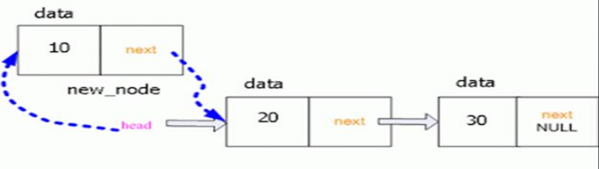

The data structure is allowed to grow and shrinks as the demand for storage arises.
When a program is being run, a dynamic data structure can expand or contract in size as necessary. Since memory is allocated dynamically during runtime, memory resources may be managed effectively.
Dynamic data structures are adaptable and can change in size depending on the actual data being stored, as opposed to static data structures, which have a fixed size defined at compile-time. They are excellent for situations where the quantity of pieces or the size of the data cannot be predicted in advance or may change over time due to their dynamic resizing capabilities.
An ordered set consisting of a variable number of elements or a collection of related records to which additions and deletions are made.
A linked list is a linear data structure consisting of a sequence of nodes, where each node contains a value and a reference (or pointer) to the next node in the list. Unlike arrays, linked lists do not store elements in contiguous memory locations. Instead, each node is allocated dynamically and connected to the next node through pointers.
There are usually two forms of linked list:
Basic Operations:
Step 1: Declare the elements of the node
struct node {
int data;
struct node *next;
};
Step 2: Declare needed pointers to point to node
struct node *new_node, *head, *last, *cn;
Step 3: Create the node
new_node=(struct node*)malloc(sizeof(struct node));
Alorithm addFirst(string newData):
create a new node v containing newData
v.next = head
head = v
size = size + 1;

Algorithm addLast(string newData):
create a new node v containing newData
v.next = null
if (head == null) { // list is empty
head = v
} else { // list is not empty
tail.next = v
}
tail = v
size = size + 1
Algorithm removeFirst()
if (head == null) then
Indicate an error: the list is empty
tmp = head
head = head.next
tmp.next = null
size = size - 1
Algorithm traverseList()
curNode = head
while (cureNode != null) {
// print out the contents of the current node
curNode = cureNode.next
}
Search Operation
Int list[list size];
Void question(int key)
{
Int index = 0, found = 0;
while(index < list size)
{
if(list[index] == key) {
Found = 1; printf(“Found”); break;
}
Index = index + 1;
}
if (found == 0)
printf(“Not Found!”);
}
Doubly-Linked List
Algorithm removeLast():
v = trailer.prev // the current last node
if (v == header) then
Indicate an error: the list is empty
prev = v.prev
prev.next = trailer
trailer.prev = prev
v.prev = null
v.next = null
size- -
There are three basic operations with the circularly linked list: